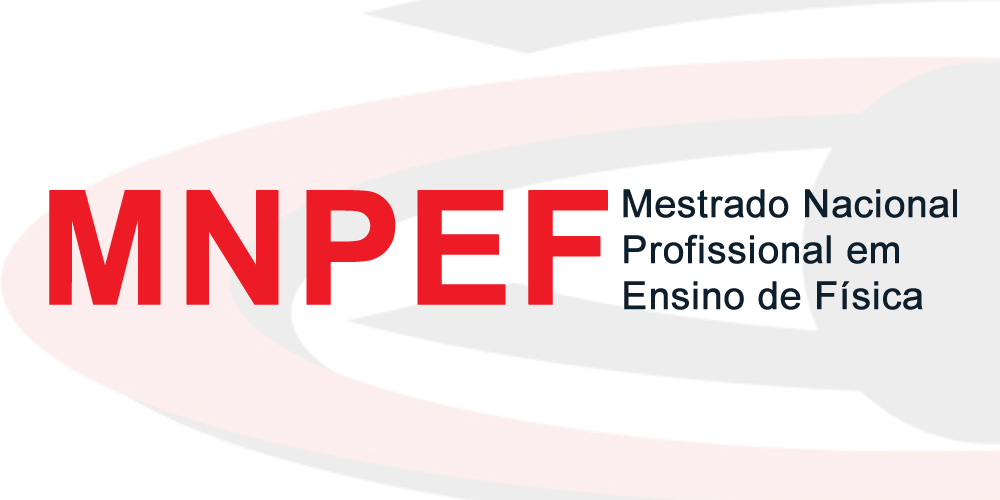
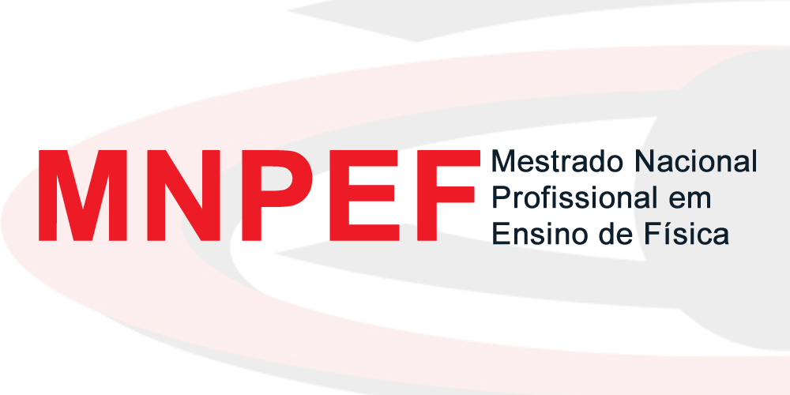

Fisiaudiolab
O Fisiaudiolab é um laboratório virtual inovador voltado para o ensino de acústica. Explore conceitos físicos de som e ondas de forma interativa e prática diretamente no seu dispositivo Android.
Baixar Aplicativo
Aponte a câmera para o QR Code:
Nota: Por ser um arquivo .apk direto, seu celular pode solicitar permissão para "Instalar de fontes desconhecidas".